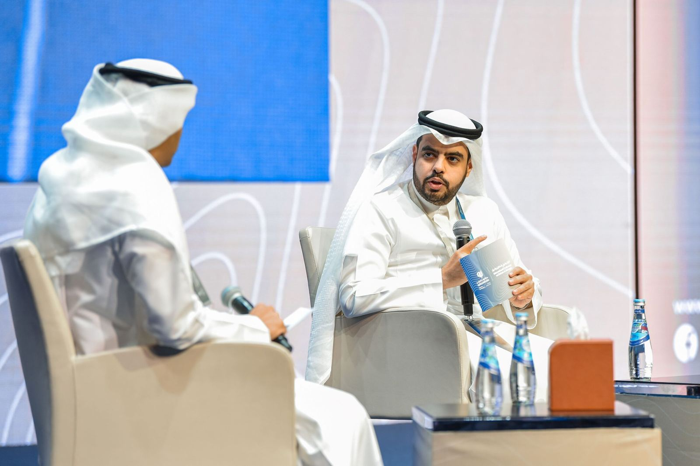

Conferences · Education
3rd International Conference on Debate & Dialogue (ICDD) 2027
- Dates
- –
- Location
- Doha, Qatar
- Format
- In-person
- Category
- Education
- Industry
- Education / Research
- Organiser
- QatarDebate Center (Qatar Foundation)
- Expected attendance
- 800
- Official website
- https://qatardebate.org/programs/academic-programs/3rd-icdd/
About
Arabic and English. Venue not named. Qatar dates are local (Arabia Standard Time, UTC+3).
Topics: debate, dialogue, education, AI and argumentation.
Official page: the 2nd ICDD (Doha, May 2025) 'brought together more than 800 participants from 36 countries' (previous edition).
Sources
- Official — https://qatardebate.org/programs/academic-programs/3rd-icdd/